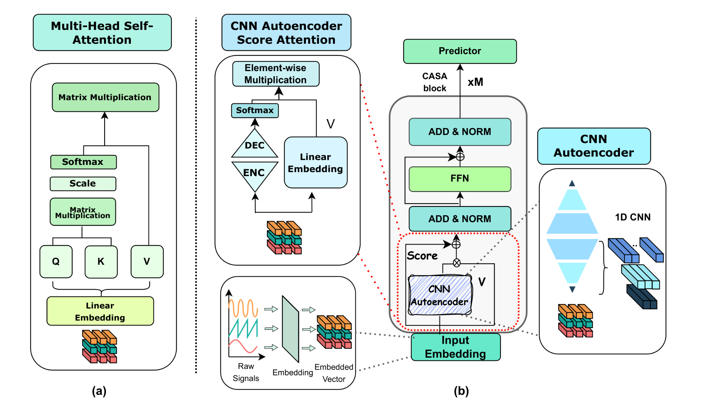

IJCAI · 2025 · Time-Series Forecasting
CASA
CNN Autoencoder-based Score Attention for Efficient Multivariate Long-term Time-series Forecasting
Abstract
Research summary
Multivariate forecasting Transformers can be costly and struggle to capture relationships across variables efficiently. CASA replaces conventional score computation with a compact attention mechanism that can be integrated into different Transformer backbones.
Proposed method
A convolutional autoencoder produces attention scores, which are normalized and applied to embedded values through element-wise multiplication.

Experimental results
Values reported in the IJCAI 2025 proceedings abstract.
Research impact
The approach improves the efficiency of long-horizon forecasting while preserving or improving predictive quality on the evaluated benchmarks.